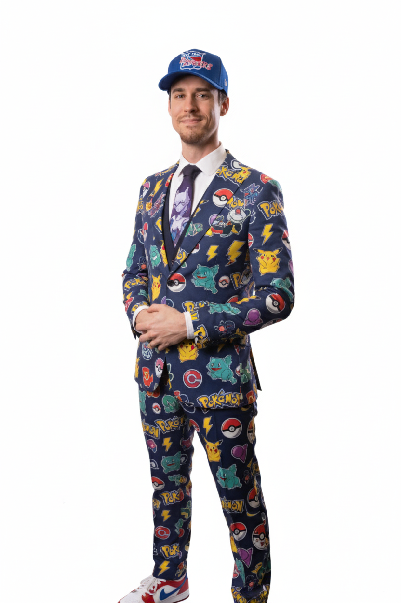
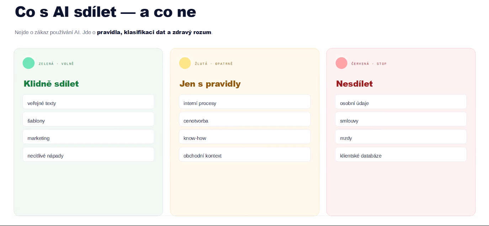

Odhalte, jak získat zpět čas, zbavit se otravné administrativy a bezpečně využít AI jako svou neúnavnou sekretářku.
Proč se vůbec bavit o umělé inteligenci, když máte plné ruce práce se zvířaty?
„Počítače a papírování se snažíme a priori odsunout. Chceme řešit pacienty.“
— Hlas z terénu
Jmenuji se Gabriel Kožík. Jsem advokát, AI stratég a networker. Pomáhám podnikatelům růst bezpečněji díky právní ochraně, chytrému využití umělé inteligence a silným kontaktům. Zjednodušeně řečeno – propojuji světy a lidi.
Jako advokát a partner v kanceláři IUSTORIA vím, že každá inovace musí mít právní mantinely. Řeším AI compliance, obchodní právo a smluvní bezpečnost.
Jako AI stratég učím firmy a experty převést umělou inteligenci z "teoretické hračky" do role každodenního asistenta pro maximální efektivitu.
Věřím, že kvalitní byznys stojí na vztazích. Jsem jednatelem společnosti Pálava Horizons a provozuji klub Pod Pálavou. Aktivně spojuji lidi, firmy a příležitosti.
Slovo "AI" dnes vidíme všude, od chytrých praček po precizní medicínu. Než začneme, pojďme si ukázat 3 základní šuplíky, abychom věděli, v jakém z nich budeme dnes operovat.
Funguje na pozadí už roky. Analyzuje historická data a předpovídá, co se stane, nebo co by se vám mohlo líbit.
AI trénovaná čistě na hledání a rozpoznávání vzorců v obraze. Neumí psát maily, ale přesně vidí to, co vybledlé oko přehlédne.
Netřídí data, ale tvoří nový, originální obsah (texty, obrázky, sumarizace) na základě vaší konverzace. Vaše nová sekretářka.
Nejčastější chybou v praxi je, že lidé očekávají od Generativní AI (ChatGPT). Proto vznikají omyly.
Než začneme delegovat úkoly, pojďme si nastavit správná očekávání. AI není magický vševěd, ale mimořádně efektivní pravděpodobnostní kalkulačka.
Funguje jako chytřejší klávesnice v mobilu. Nečte si z učebnice, ale na základě miliard textů "hádá" nejpravděpodobnější další slovo.
Bleskově zpracuje zprávy pro klienty, zformuluje maily, utřídí poznámky z vyšetření a připraví příspěvky na sítě.
Úzce specializované modely (např. na RTG) vás upozorní na anomálie, které unavené lidské oko o půlnoci může snadno přehlédnout.
Nemá žádné skutečné klinické zkušenosti. Chybí jí kontext reality, zvíře si nemůže "osahat" ani ho vidět.
Když systém odpověď nezná, často to nepřizná. Místo toho si ji naprosto suverénně a přesvědčivě vymyslí (halucinuje).
Nemůže převzít vaši zodpovědnost. Za každé medicínské rozhodnutí nesete právní i etickou odpovědnost vždy jen a pouze vy.
Základní bezplatné modely nemají přímý přístup k aktuálním databázím a neumí klasicky "hledat". Když se jich zeptáte na vzácný fakt, nesáhnou do knihovny. Místo toho generují text, který zní odborně a pravděpodobně, i když je nesmyslný.
Pokud se AI zeptáte na neobvyklé dávkování léků, dokáže vygenerovat výpočet a dávkování, které vypadá matematicky naprosto přesně, ale ve skutečnosti si ho "vymyslela" poskládáním slov ze dvou nesouvisejících studií.
Nástroj stavěný na rešerše. Nejprve prohledá internet a studie, a u každého tvrzení vám doloží přesný (klikací) odkaz na zdroj.
Nahrajte do ChatGPT rovnou celou studii (PDF) a přikažte mu: „Hledej a shrň data POUZE na základě přiloženého dokumentu.“
Technologie dokáže v reálném čase naklonovat váš hlas i tvář. Pokud vám "zavolá" klient z neznámého čísla s prosbou o okamžitou konzultaci a sdělení údajů z karty, vždy si identitu ověřte.
Máme za sebou teorii, limity a nebezpečí AI. Než se vrhneme na praktické řešení vaší denní agendy, ptejte se na cokoliv.
Načerpejte energii. Ve druhé polovině budeme drtit konkrétní ukázky z ordinací a získáte zpět svůj volný čas.
Na základě dat přímo z vašich ordinací se nepotřebujete učit složité rezervační systémy. Potřebujete chytrou sekretářku pro ty nejotravnější úkoly.
9 z 13 lékařů označilo sítě jako největší potřebu. Jak oslovit klienty, když na to není čas?
Komunikace a přepisování poznámek po ordinační době bere energii i čas.
Vyhledávání ve studiích a podpora u nestandardních symptomů.
AI sama o sobě neví, jaký máte cíl. Bez kontextu generuje obecnou "vatu". Kontext je to, co zaostří její pozornost na správná trénovací data a promění ji ve vašeho expertního asistenta.
"Napiš zprávu klientovi, že jeho pes musí na operaci."
"Jsi empatický veterinář. Napiš zprávu pro pana Nováka (laika). Jeho jezevčík Ben (12 let) musí na operaci zubů. Uklidni ho, vysvětli nutnost zákroku, ale buď profesionální. Max 3 odstavce."
Zlatý vzorec správného kontextu:
Podívejte se, jak vypadá úspora času v praxi. Žádné složité systémy, jen jednoduché příkazy (prompty).
🐶 Vítejte ve štěněcím světě! Máte už svůj očkovací plán?
Pořízení štěňátka je obrovská radost, ale i zodpovědnost. Aby váš nový parťák rostl zdravě a bezpečně objevoval svět, je klíčové nastavit správné očkovací schéma a ochranu proti parazitům.
Ochráníte ho tak před vážnými nemocemi jako je parvoviróza nebo psinka. 🛡️
👉 Zastavte se u nás v ordinaci – rádi pejska vyšetříme, nastavíme individuální plán a zodpovíme všechny vaše dotazy. Těšíme se na vás!

Ne všechno je pro umělou inteligenci vhodné. Kde vám ušetří hodiny a kde naopak hrozí riziko?

Marketing, posty na sítě, sumarizace dlouhých textů, e-maily klientům, návrhy preventivních programů. Maximální úspora času, minimální riziko.
Diferenciální diagnostika, rešerše složitých případů, překlady studií. Slouží jako "Druhý názor", je nutný váš odborný dohled a kritické myšlení.
Výpočet přesných dávek anestetik, definitivní diagnóza bez kontroly, sdílení citlivých osobních údajů. Zde AI chybuje a zodpovědnost nesete vy.
Proč nesmíte k AI přistupovat jako k vyhledávači faktů? Tyto reálné případy z advokátní praxe vás přesvědčí.
Advokáti sepsali repliku pomocí ChatGPT. Ten si ale zcela vymyslel 6 fiktivních soudních rozsudků. Když je soud nenašel, AI je pro advokáta lživě potvrdila a vygenerovala jejich plný falešný text.
Při složitém rozvodu se právnička opřela o dva smyšlené judikáty ohledně mezinárodní péče o děti. Protistrana strávila desítky hodin marným hledáním v databázích.
Advokát použil AI pro ústavní stížnost. Výsledek? Vyhalucinovaný nález sp. zn. III. ÚS 2987/18, překroucená judikatura a smyšlený rozsudek Evropského soudu.
Zkopírování plné verze NDA (vč. RČ) do bezplatného ChatGPT pro "revizi". Nebo zadání výpovědi pro "Jana Nováka, r.č., za včerejší krádež v práci".
"Mám strach o pacientská data a nevěřím výsledkům." Zde jsou tři pilíře, jak na to bezpečně:
Neberte AI jako "černou skříňku", ale jako kolegu ke konzultaci. Pokud se neshodnete, donutí vás to podívat se na snímek ještě jednou a pečlivěji.
Většina kvalitních PACS/AI systémů umí data anonymizovat před odesláním. Do veřejných modelů (ChatGPT) naopak pište jen obecně "Klient a pes".
Barevný AI report (který hezky vyznačí např. zvětšené srdce) je skvělý nástroj. Majitel černobílému RTG nerozumí, ale barevný výstup z AI pochopí a lépe přijme cenu léčby.
AI dokáže krásně strukturovat text, ale právní odpovědnost nesete vy. U složitých případů ji nechte odcitovat zdroje a křížově ověřujte.
Srozumitelný informovaný souhlas a poučení (které vám AI vygeneruje za minutu do "lidštiny") eliminuje 90 % právních sporů před KVL. Klient, který textu rozumí, se málokdy soudí.
Pro menší týmy je zavádění izolovaných aplikací překážkou. Nejefektivnějším řešením je využití Google Workspace obohaceného o AI (Gemini), který řeší i vaše obavy o bezpečnost.
Jediné prostředí propojuje nástroje, které už možná znáte: Gmail (komunikace), Disk (šablony), Kalendář (plánování) a Úkoly (připomenutí). Vše pod jednou střechou, navzájem propojené přes Gemini.
Firemní verze Google Workspace poskytují plně zabezpečené prostředí. Garantují, že data vašich klientů a zvířat nejsou využívána k trénování veřejných AI modelů.
Skvělé pro terénní doktory. Vyčleníte si v Kalendáři blok (např. 13:00–15:00 pro vakcinace). Klientům pošlete odkaz, vyberou si čas a schůzka se vám sama propíše do mobilu.
Gemini (po povolení) prohledá celý váš Workspace. Příklad: "Najdi mi v e-mailech a na Disku veškerou loňskou komunikaci s chovatelem Novákem a shrň, jaké léky jsme dali jeho stádu." Ušetřeno 15 minut hledání.
Umožňuje nahrát pouze vaše vlastní zdroje (interní protokoly, ceníky, kazuistiky, PDF z laboratoře). AI pak hledá odpovědi přísně jen v těchto dokumentech a nevymýšlí si.
Průzkum ukázal obří časový paradox: Chcete šetřit čas, ale nemáte čas to implementovat. Zde jsou první 3 kroky:
Vyberte jen jednu úmornou věc. Třeba zprávy klientům. Na zbytek zapomeňte.
Jděte na gemini.google.com. Stačí vám google účet.
Cílem není změnit kliniku. Cílem je zítra ušetřit prvních 15 minut.
Když jsem s AI na začátku roku 2023 začínal, bylo to jako učit se chodit. Vy už si frustrací z nesplněných očekávání procházet nemusíte.
Získat kvalitní text znamenalo studovat složitý "prompt engineering" a čelit neustálým chybám a smyšlenkám.
Halucinace se omezily a složitý engineering nahradila přirozená konverzace. AI už není jen hračka, je to hotový ekosystém.
Nejlepší čas začít s AI byl před rokem.
Druhý nejlepší čas je právě teď.
Nejsem programátor. Všechny tyto weby a projekty byly od první myšlenky po funkční kód vytvořeny čistě pomocí umělé inteligence.
Workshopy pro profesionály
Osobní vizitka a služby
E-shop a zábavní projekt
Strategické integrace AI
AI pro firmy a byznys